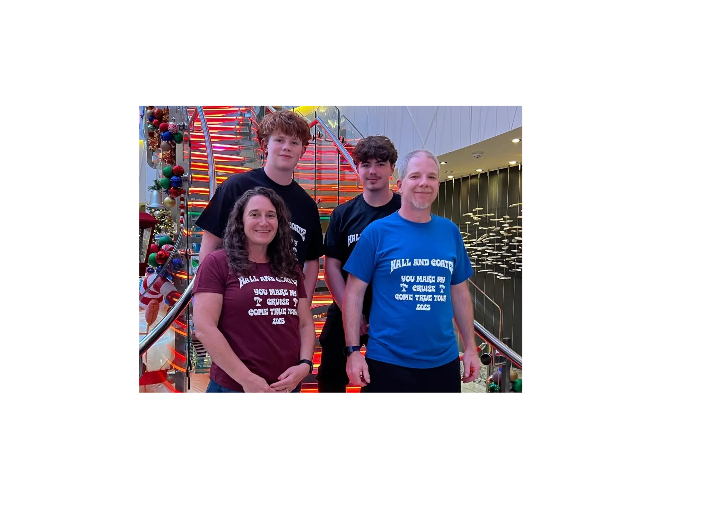

About Stacy
A lifetime of service to Fairfax—on City Council and in our community

A Steady Voice for Fairfax
Stacy R. Hall has dedicated her career to serving the Fairfax community. As Controller at the Veterinary Medical Research Foundation, she brings financial expertise and careful stewardship to every decision.
Elected to Fairfax City Council, Stacy has been a consistent advocate for responsible development, quality education, and neighborhood safety. She believes in listening first, acting with purpose, and always putting community needs ahead of politics.
Stacy and her family have called Fairfax home for over two decades. She understands what makes this community special—and what it takes to keep it that way.
Experience & Service
City Council Member
Serving Fairfax residents with a focus on infrastructure, public safety, and education.
Controller, Vet Research Clinic
Managing financial operations for a leading veterinary research organization.
Moms Demand Action
Recognized for advocacy on community safety and responsible gun ownership.
Community Volunteer
Active in local schools, neighborhood associations, and civic organizations.